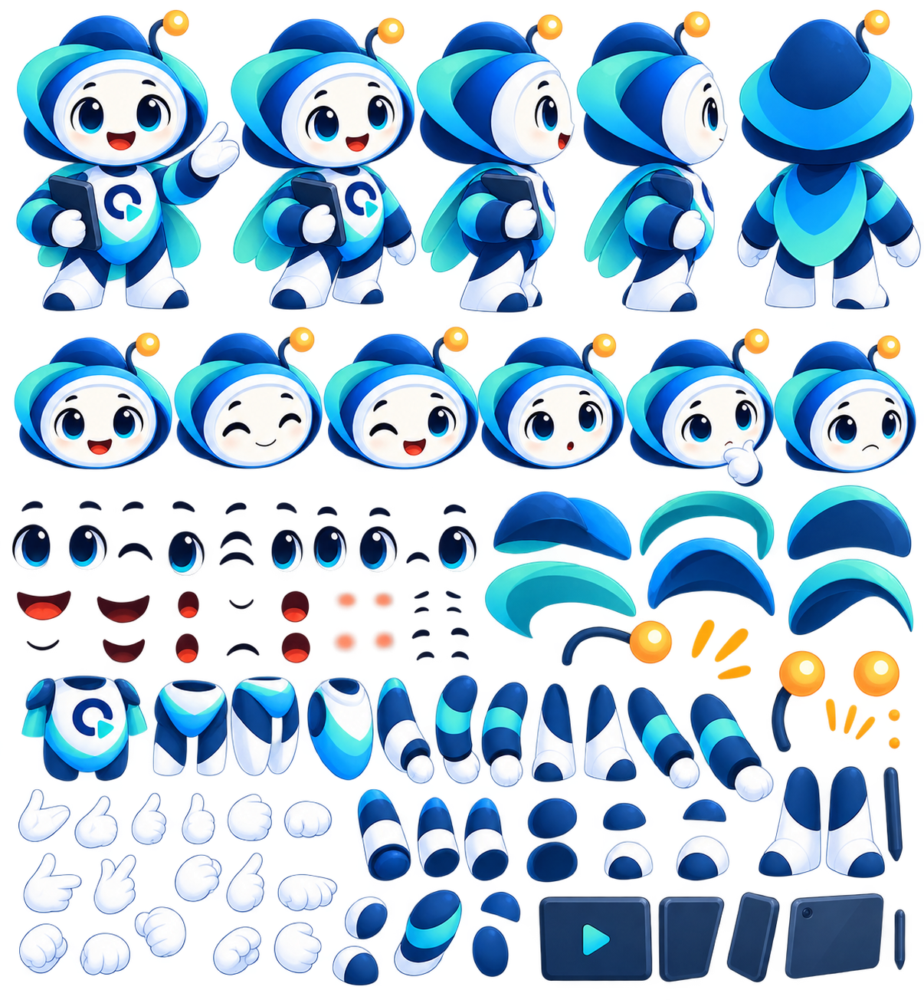
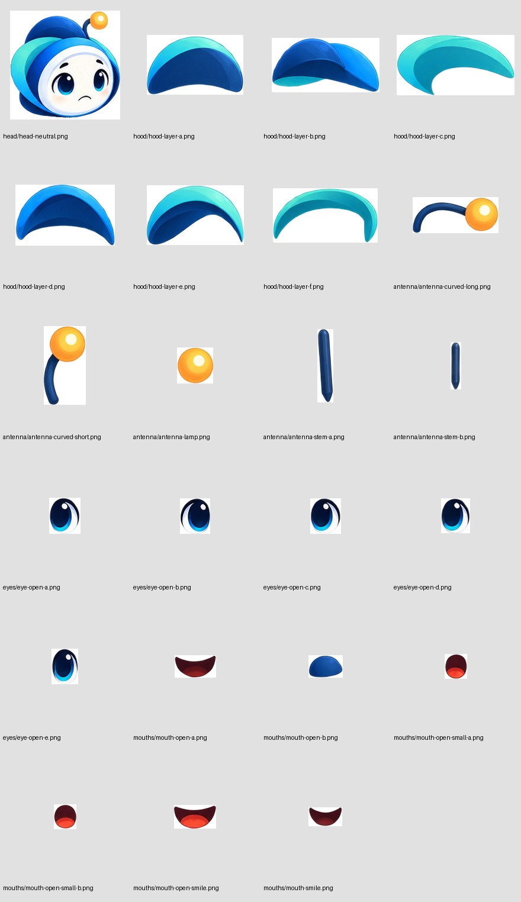
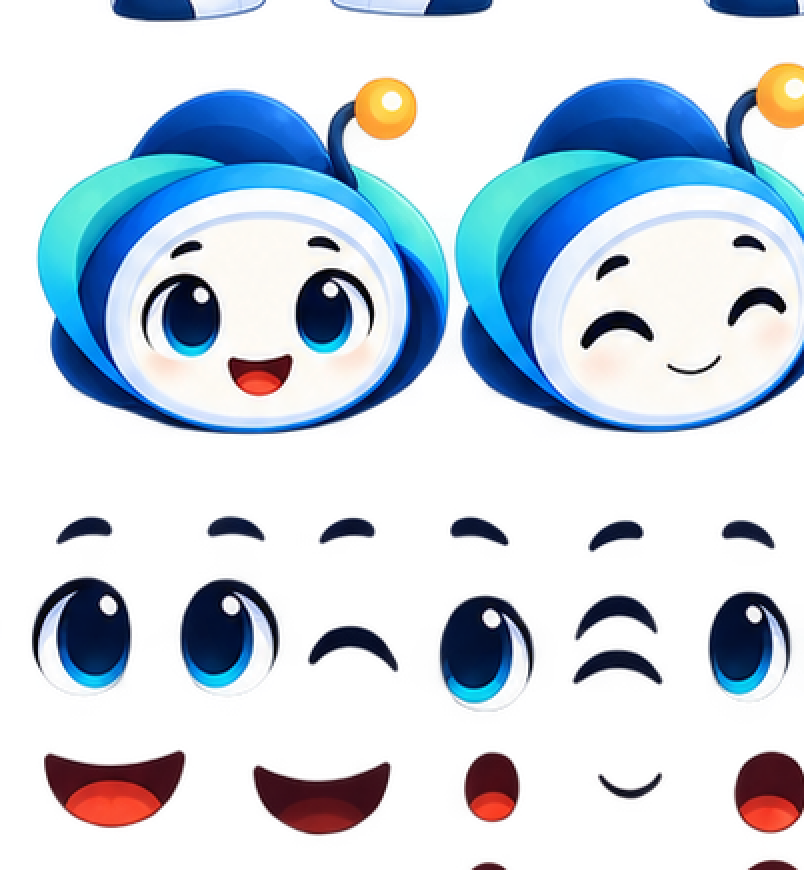
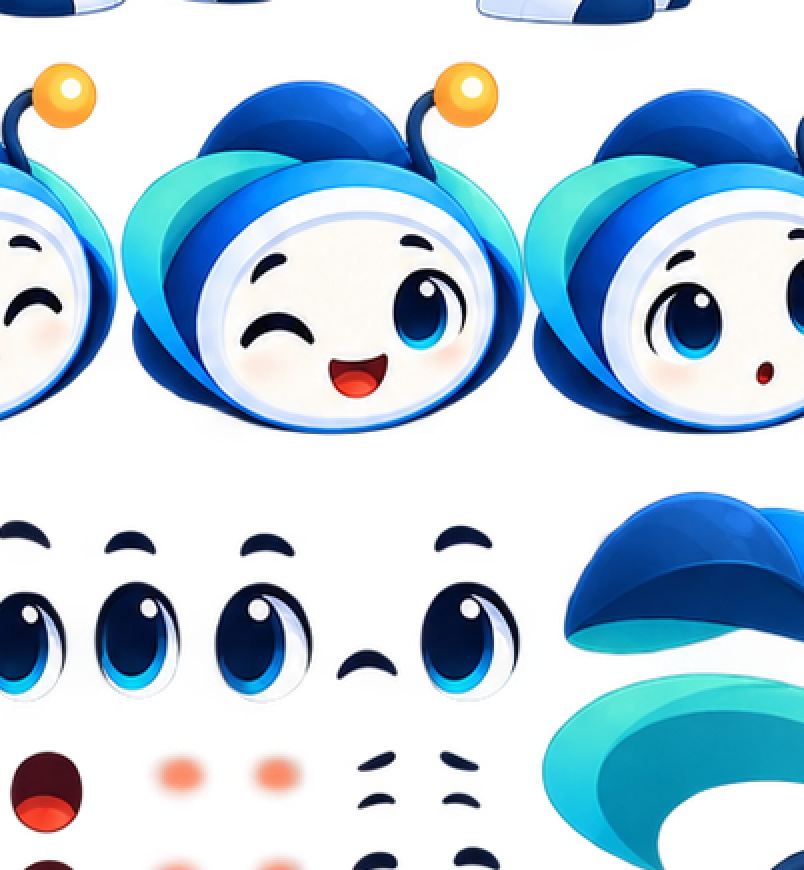
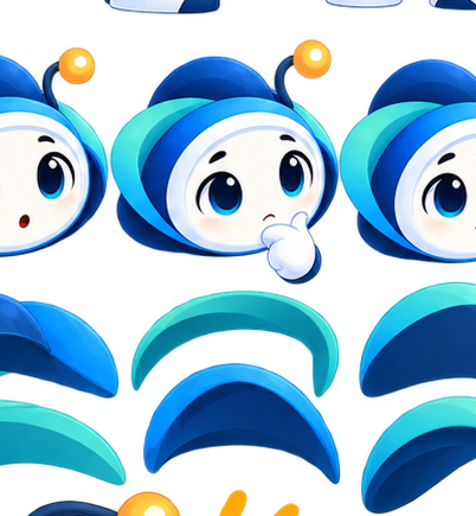

ONE · QA visual
Revisión fidelity-first. Nada se promueve sólo por validez técnica.
Master neutral · REFERENCIA
Objetivo visual aprobado. No requiere aprobación en esta pantalla.
Master de partes · REFERENCIA
Fuente canónica para recuperar componentes. No requiere aprobación.

Candidatos existentes · TRABAJO EN PROGRESO
Material recuperado pendiente de clasificación, limpieza y asociación. No es un resultado final.

Inspección por pieza
Vista ampliada de cada candidato. Estos elementos siguen en evaluación; seleccionar una pieza aquí no la promueve a asset definitivo.
Inspección detallada del master de partes
Recortes al 100% con solapamiento, sin alterar píxeles. Sirven para localizar placa facial y cejas antes de extraerlas.
Regiones confirmadas para inspección
Cejas: parts-04 y parts-05. Placas faciales: parts-04, 05, 06 y 07. Estas vistas 2× usan vecino más cercano: amplían los píxeles existentes sin reinterpretarlos.

parts-04 · inspección 2×
parts-05 · inspección 2×
parts-06 · inspección 2×Candidatos faciales aislados · inspección
Estos recortes provienen únicamente de componentes alfa independientes visibles en la biblioteca facial de parts-04/05. Son candidatos de inspección, no assets aprobados.
Estado del análisis
La inspección técnica confirmó que los 22 archivos son candidatos utilizables, pero todavía no demuestra qué variante corresponde al neutral. Además faltan como capas independientes la placa facial y las cejas. Por fidelidad, no se hará una reconstrucción por aproximación.
Próximo control de QA
Los botones de aprobación aparecerán aquí cuando exista un resultado procesado o una reconstrucción comparable con el master. Los candidatos de arriba todavía no deben aprobarse.